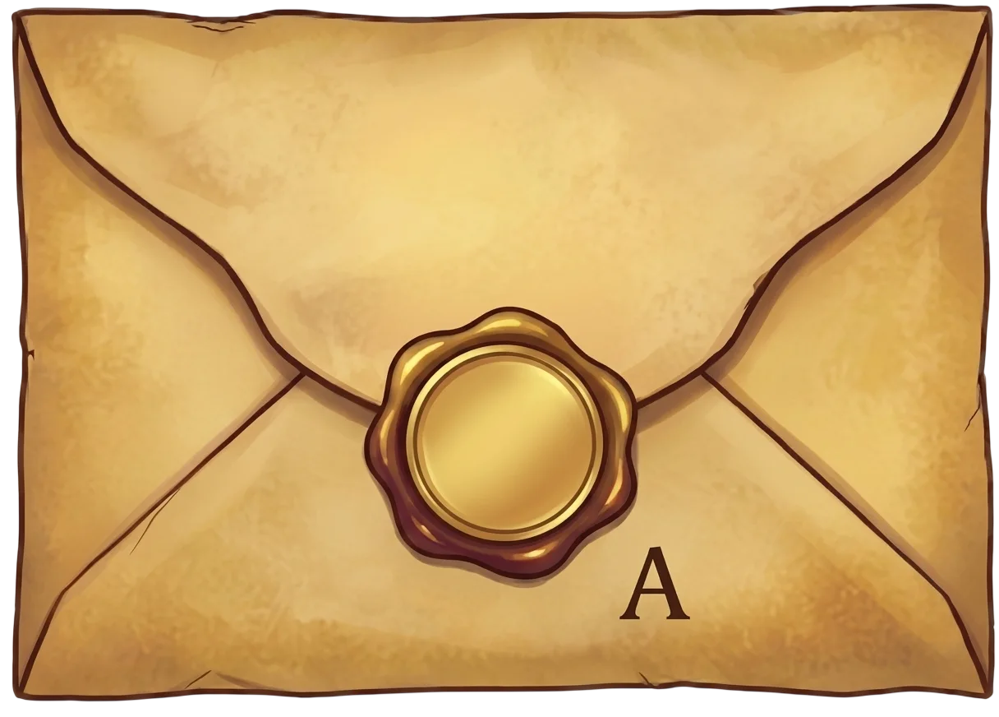
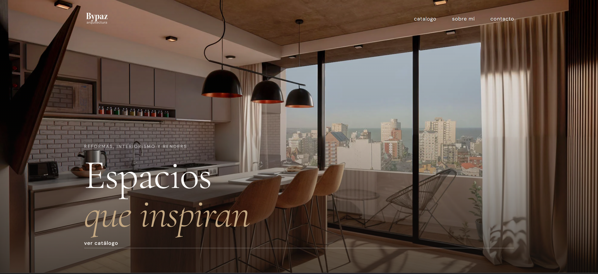
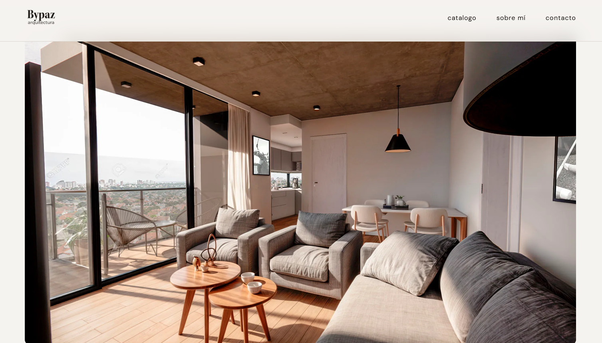
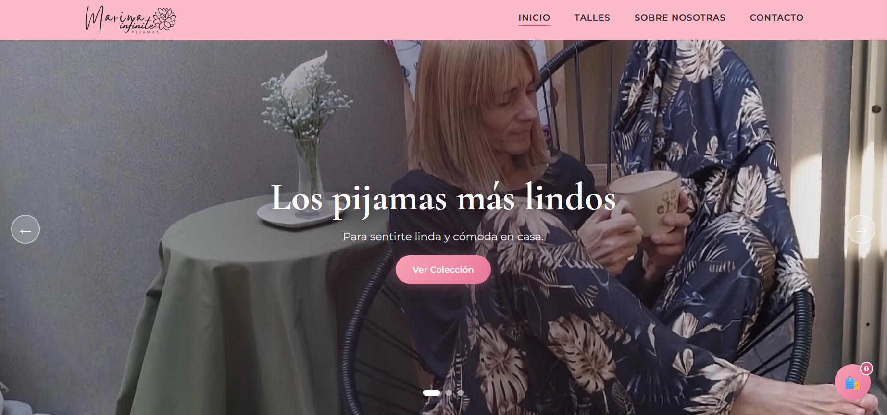
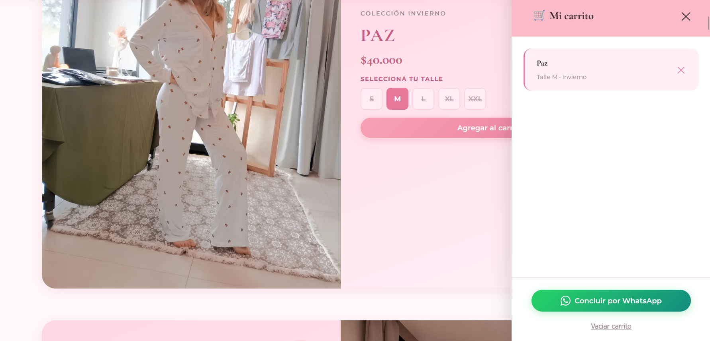
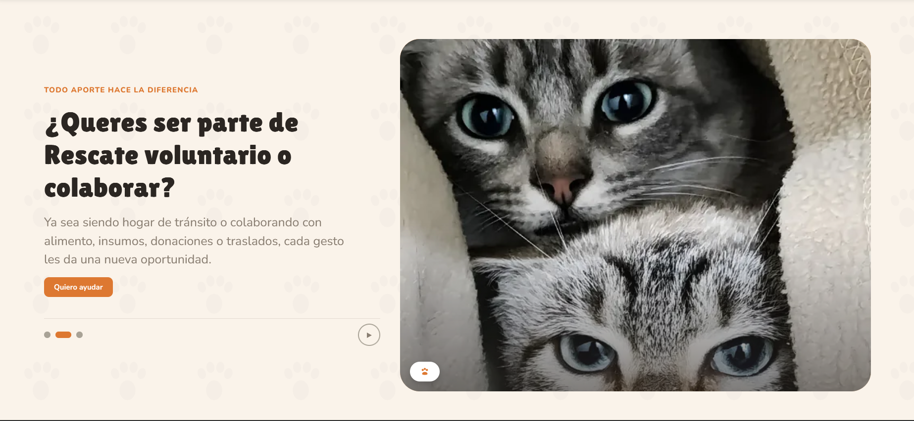
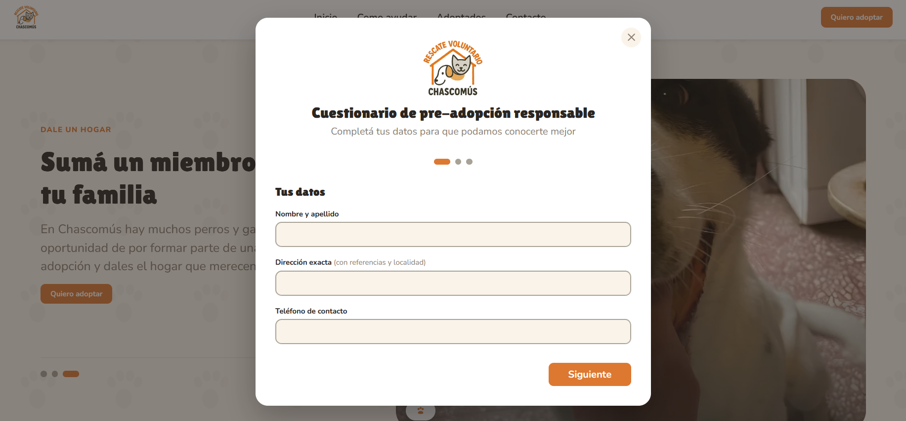

Descubrir
Diseño web · Desarrollo a medida
ByPazArquitectura
Un catálogo digital para mostrar renders
La cliente requería una plataforma web propia y profesional para exhibir su catálogo de renders, buscando independencia de las redes sociales y de plataformas de terceros genéricas.
Creé el sitio completo desde cero enfocado en una experiencia de usuario (UX) fluida. Prioricé galerías limpias de alta resolución y una navegación intuitiva para apreciar el trabajo a primer golpe de vista.

Para responder a la necesidad de orden de la cliente, el catálogo se organizó en secciones independientes. Esto permite agrupar los proyectos claramente por tipo o estilo y sumar nuevos trabajos sin desordenar la estructura general.
Los renders se organizan verticalmente dentro de cada categoría, permitiendo al usuario deslizar cómodamente para ver el proyecto completo en alta calidad y detalle.

E-commerce · Identidad de marca
MarinaInfinite
Mi propia marca de pijamas, de cero
Creación integral de la identidad visual de la marca, definiendo paleta de colores, tipografías y estética estética para su tienda online de pijamas.
Maquetación e-commerce enfocada en exhibir las prendas de forma elegante, clara y optimizada para dispositivos móviles.

Implementé un carrito de compras flotante que acompaña al usuario en todo su recorrido, facilitando la revisión de productos seleccionados de forma práctica y sin interrupciones.
Sistema de checkout simplificado hacia WhatsApp para efectivizar compras rápidas y mantener un trato cercano con la clienta.

Sistema de diseño · UX
RescateVoluntario
Un sitio pensado antes de dibujar un solo pixel
Sitio web desarrollado en el marco universitario para la ONG Rescate Voluntario Chascomús, concebido para visibilizar la problemática del abandono animal y centralizar los canales de ayuda.
Diseñé una estructura accesible enfocada en 3 pilares clave: Adopción Responsable, 3 de sus historias con Éxito (Adoptados) y Formas de Colaborar (tránsito, insumos y traslados).

Implementé un modal interactivo con un cuestionario paso a paso para la pre-adopción responsable, facilitando a la ONG la recolección ordenada de datos de potenciales familias.
Interfaz amigable y empática diseñada para incentivar la participación ciudadana mediante hogares de tránsito y donaciones.
